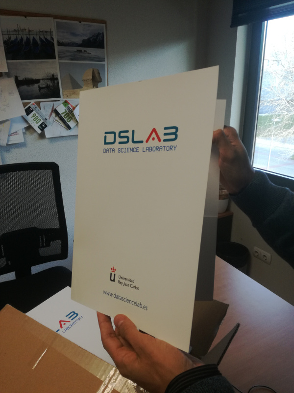

<!-- main-container start -->
<!-- ================ -->
<section class="main-container ">
	<div class="container">
		<div class="row">

			<!-- main start -->
			<!-- ================ -->
			<div class="main col-md-12">
				<div class="row">
					<div class="col-md-8 pl-30">
						<h1 class="title">Data Science Lab Blog</h1>

					</div>
					<!--
					<div class="col-md-4">
						<div class="col-side-pad">
							YOU HAVE A SIDE AREA HERE TO ADJUST ADDITIONAL CONTENT
						</div>
					</div>
					-->


							<!-- blogpost start -->
							<article class="blogpost">
								<div id="carousel-blog-post" class="carousel slide" data-ride="carousel">
									<!-- Indicators -->
<!--
									<ol class="carousel-indicators bottom margin-clear">
										<li data-target="#carousel-blog-post" data-slide-to="0" class="active"></li>
										<li data-target="#carousel-blog-post" data-slide-to="1"></li>
										<li data-target="#carousel-blog-post" data-slide-to="2"></li>
									</ol>
-->

									<!-- Wrapper for slides -->
									<div class="carousel-inner" role="listbox">
										<div class="item active">
											<div class="overlay-container">
												
												<a class="overlay-link" href="blog-post.html"><i class="fa fa-link"></i></a>
											</div>
										</div>
									</div>
								</div>
								<header>
									<h2><a href="blog-post.html">Identidad de Marca</a></h2>
									<div class="post-info">
										<span class="post-date">
											<i class="icon-calendar"></i>
											<span class="day">3</span>
											<span class="month">Dec 2018</span>
										</span>
										<span class="submitted"><i class="icon-user-1"></i> by <a href="#">Isaac Martín de Diego</a></span>
									</div>
								</header>
								<div class="blogpost-content">
									<p>Nuevas carpetas del DSLab</p>
									
								</div>
								<header>
									<h2><a href="blog-post.html">Proyectos TFG y TFM</a></h2>
									<div class="post-info">
										<span class="post-date">
											<i class="icon-calendar"></i>
											<span class="day">24</span>
											<span class="month">Feb 2017</span>
										</span>
										<span class="submitted"><i class="icon-user-1"></i> by <a href="#">Isaac Martín de Diego</a></span>
									</div>
								</header>
								<div class="blogpost-content">
									<p>En el DSLab tenemos estudiantes realizando su trabajo fin de grado o de máster. ¿Quéres ser uno de ellos? Éstas son algunas de nuestras propuestas:</p>
									<ul>
										<li>Big Data en VideoVigilancia Inteligente.</li>
										<li>Machine Learning para el análisis de sentimientos en la web.</li>
										<li>Video Tagging con Deep Learning.</li>
										<li>Seguridad Informática mediante Machine Learning.</li>
									</ul>

								</div>
							</article>
							<!-- blogpost end -->
				</div>
			</div>
			<!-- main end -->

		</div>
	</div>
</section>
